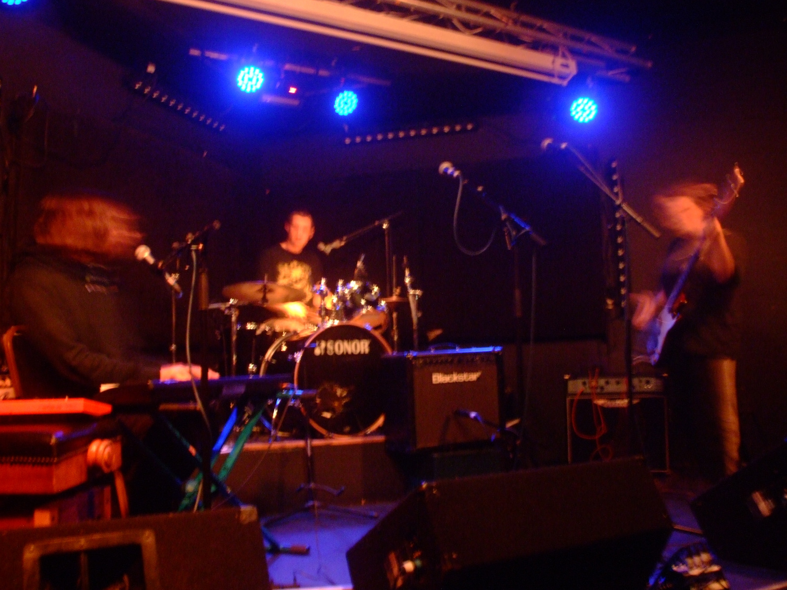
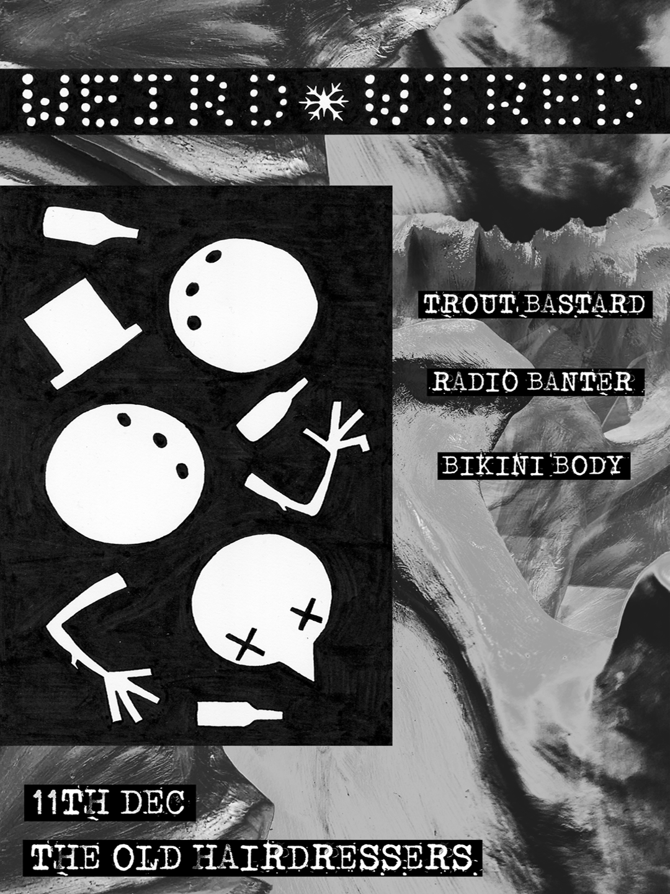
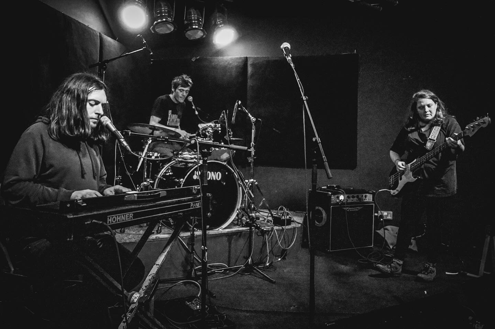

Radio Banter
on Sunday 15th November 2026 we warm up for Tara Clerkin Trio at the Glad Cafe twice! Very limited tickets available from:
Matinee (2.30pm)
Evening show (7.30pm)

Weird & Wired Friday 11th December 2026: w/ Trout Bastard and Bikini Body - The Old Hairdressers. This is the radio banter christmas party / work night out. Please come and join in the fun.
https://buytickets.at/weirdandwired/2489616

10-track CD album 'Radio Banter' produced by Chris White and hand made in Glasgow (by Spicey); eco cardboard case with laminate front/back/spine covers & disc holder; signed by the band and artwork artist Lily Paine; unique hand labelled slow-burned discs; 20-page illustrated lyric booklet; plus 2 shiny stickers!
Available from Monorail, Glasgow; Some Great Reward, Glasgow; Europa Music, Stirling; and Good Vibes, Edinburgh.
Radio Banter are
Chris Wallace Drums & Vocals
Sephi Lock Bass guitar
Rob Alexander Vocals & Electric piano
